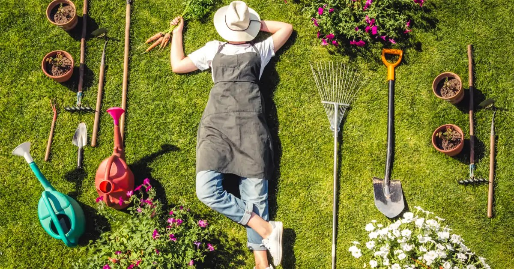

Stop ! Détendez-vous ...
Pour 5 minutes ou pour la journée, notre jardin est ouvert au public.
Venez passer avec nous votre “temps de midi”, vous détendre après une journée de boulot ou passer un moment le week-end … L’espace détente aménagé permet à tous de décompresser dans un lieu calme et verdoyant.
Que ce soit pour bouquiner à l’ombre, parcourir le jardin, faire une sieste ou bronzer au soleil à côté du petit étang, chacun peut y trouver son compte. Des chaises, des transats, table, parasol, barbecue permettront d’apprécier ce moment de quiétude en pleine nature.
Cet espace est un atout important pour apprécier la dolce vita, créer des liens, échanger et donc resserrer le tissu social. Le jardin reste un lieu parfait pour engager une conversation autour des plantes, fleurs et animaux qui y vivent … et qui sait ? susciter des vocations ?
Il vous sera demandé de garder vos animaux en laisse et de respecter la quiétude du jardin, pour le bien de tous.
